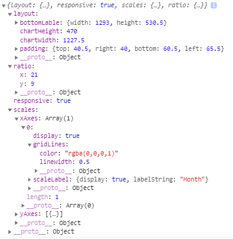
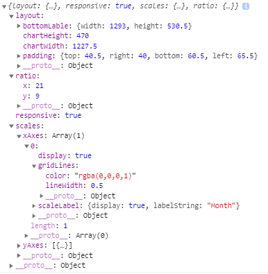

JChart Method
# update()
이를 이용하여 config.data에 값을 대입 후 update를 실행하여 차트를 사용한다.
example
var dummy = [randomScalingFactor(),randomScalingFactor()]; //랜덤 값 배열 생성
config.data.datasets[0].data = dummy; // config파일에 생성된 값을 대입
myChart.update(); // config값을 기준으로 새로 그려주기.
config.data.datasets[0].data = dummy; // config파일에 생성된 값을 대입
myChart.update(); // config값을 기준으로 새로 그려주기.
# changeRatio()
config.options.ratio에 따로 값을 대입하지 않을 경우 기본 종횡비는 21:9이다.
example
config.options.ratio.x = ratioX;
config.options.ratio.y = ratioY;
myChart.changeRatio(); // config값을 기준으로 새로 그려주기.
config.options.ratio.y = ratioY;
myChart.changeRatio(); // config값을 기준으로 새로 그려주기.
# getCurrentOpt()
example
var value = myChart.getCurrentOpt();
return : Object
형식 :

return : Object
형식 :

# setLog(boolean)
default는 false, 즉 출력하지 않는다.
example
var myChart = new Chart(ctx, config);
myChart.setLog(true); // 로그 출력 허용
myChart.setLog(false); // 로그 출력 비허용
myChart.setLog(); // 로그 출력 비허용
myChart.setLog(true); // 로그 출력 허용
myChart.setLog(false); // 로그 출력 비허용
myChart.setLog(); // 로그 출력 비허용